天と淵のあいだ WIKI
敵と主
この mod の敵 134 種を、出る場所ごとに。敵はこの mod の敵だけです。
体力と攻撃は画面と同じ 10 倍の数字です。体力・攻撃は生まれたときの基の値で、巨神の背・ダンジョン・深淵などでは人数・段・深さで強くなります。体力が大きい相手（主・中ボス・名のある強敵）には「主」の印があります。
大陸の野（36）
| 名前 | 体力 | 攻撃 | 防具 | 出る所 |
|---|---|---|---|---|
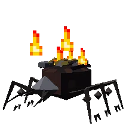 熾り蟲 | 60 | 30 | — | 灰の荒野（昼）、灰の荒野（夜） |
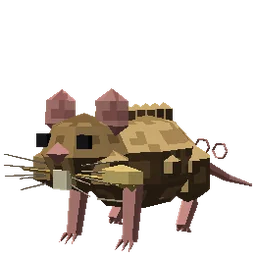 穂かじり鼠 | 80 | 30 | — | 都のまわり（昼） |
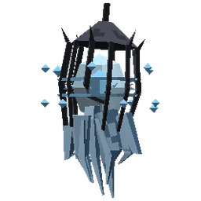 迷い灯 | 80 | 20 | — | 都のまわり（夜） |
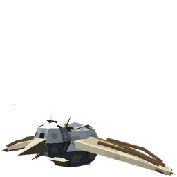 骨鳥 | 80 | 30 | — | 岩鯨の丘陵（昼） |
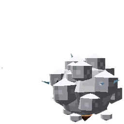 帯電毛玉 | 100 | 40 | — | 嵐の高地（昼）、嵐の高地（夜） |
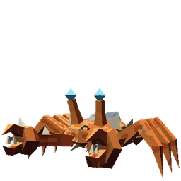 磯走り | 100 | 30 | 4 | 潮の浜（昼）、潮の浜（夜） |
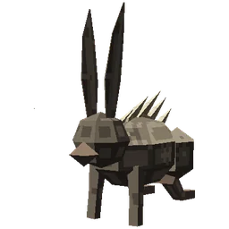 棘うさぎ | 120 | 30 | — | 岩鯨の丘陵（昼） |
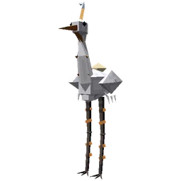 雷拾い | 120 | — | — | 嵐の高地（昼）、雷晶の空洞 |
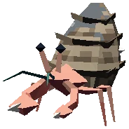 宿借り | 140 | — | — | 潮の浜（昼） |
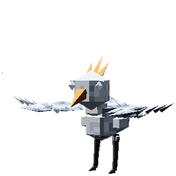 峰の雛 | 140 | 50 | — | 嵐の高地（昼）、雷晶の空洞 |
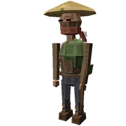 野盗の弓手 | 140 | 40 | — | — |
| 砂潜り | 160 | 40 | — | 潮の浜（昼） |
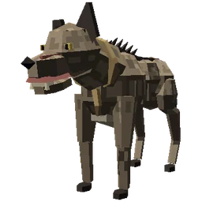 野犬 | 160 | 40 | — | 都のまわり（昼夜） |
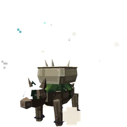 骨負い | 160 | 20 | — | 岩鯨の丘陵（夜）、鯨骨の坑 |
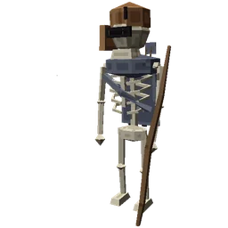 骸の弓兵 | 160 | 50 | — | 都のまわり（夜） |
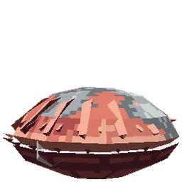 潮だまり貝 | 200 | 50 | 2 | 潮の浜（昼）、潮の洞 |
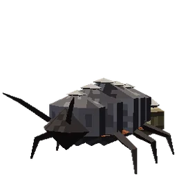 灰ひきずり | 200 | — | — | 灰の荒野（昼）、熔けた坑道 |
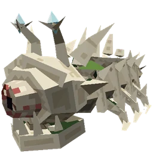 苔這い | 200 | 40 | — | 岩鯨の丘陵（昼）、岩鯨の丘陵（夜） |
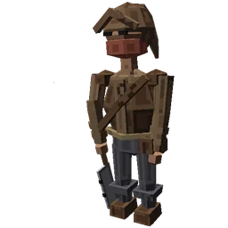 野盗 | 200 | 50 | — | — |
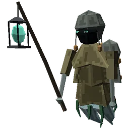 霧の漁り火 | 200 | 50 | — | 潮の浜（夜）、潮の洞 |
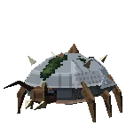 岩殻虫 | 220 | 40 | 2 | 岩鯨の丘陵（昼） |
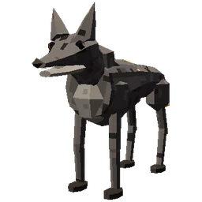 熾の山犬 | 220 | 60 | — | 灰の荒野（昼）、灰の荒野（夜） |
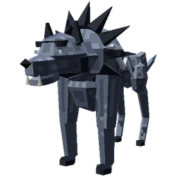 雷狼 | 220 | 50 | — | 嵐の高地（夜） |
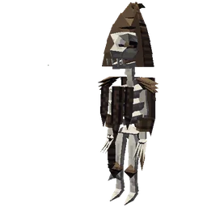 骨棘の射手 | 240 | 30 | 2 | 岩鯨の丘陵（夜）、鯨骨の坑 |
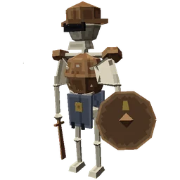 骸の歩兵 | 240 | 50 | 2 | 都のまわり（夜） |
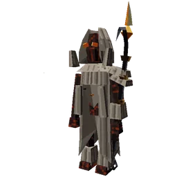 灰の屑 | 280 | 80 | 2 | 灰の荒野（夜） |
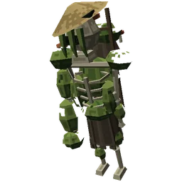 苔の亡者 | 400 | 70 | 4 | 岩鯨の丘陵（夜） |
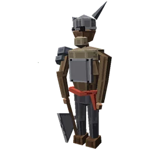 野盗の頭目 | 500 | 80 | 3 | — |
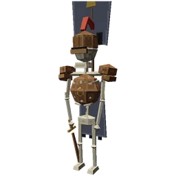 骸の旗手 | 700 | 80 | 4 | 鯨骨の坑 |
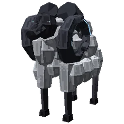 雷角の大羊 主 | 1,500 | 100 | 5 | — |
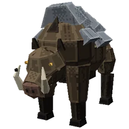 岩背の大猪 主 | 1,600 | 110 | 6 | — |
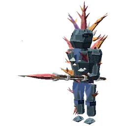 潮の番人 主 | 1,600 | 90 | 6 | 潮の浜（夜）、潮の洞 |
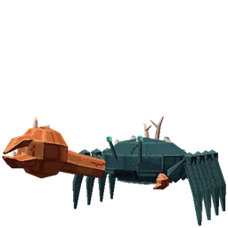 潮招きの大蟹 主 | 1,600 | 100 | 8 | — |
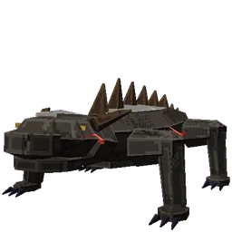 灰被りの大蜥蜴 主 | 1,600 | 100 | 6 | — |
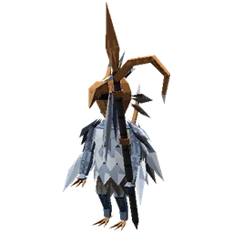 焼けた羽守 主 | 1,900 | 100 | 9 | 嵐の高地（夜）、雷晶の空洞 |
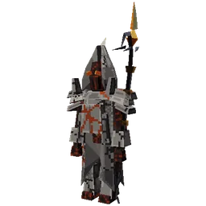 古い灰の番人 主 | 2,100 | 120 | 8 | 灰の荒野（昼）、熔けた坑道 |
岩鯨・潮殻の背と一章・二章の場所（6）
| 名前 | 体力 | 攻撃 | 防具 | 出る所 |
|---|---|---|---|---|
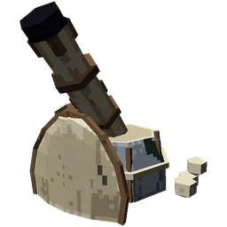 骨の砲手 | 300 | 50 | 4 | — |
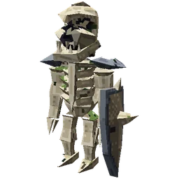 骨の番兵 | 340 | 70 | 6 | — |
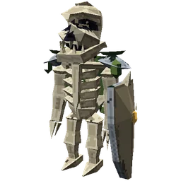 老いた歩哨 | 1,400 | 70 | 6 | — |
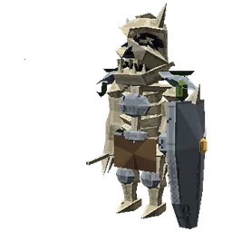 老番兵 主 | 2,200 | 90 | 8 | — |
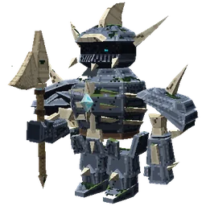 鯨骨の番兵長 主 技 | 2,800 | 110 | 10 | — |
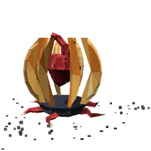 岩鯨の心臓 主 | 10,000 | 120 | 8 | — |
地下のダンジョン（16）
| 名前 | 体力 | 攻撃 | 防具 | 出る所 |
|---|---|---|---|---|
| 骨甲の団子虫 | 120 | 50 | 4 | 鯨骨の坑 |
| 晶の目玉 | 140 | 60 | — | 雷晶の空洞 |
| 洞の水母 | 160 | 50 | — | 潮の洞 |
| 鞴の小鬼 | 180 | 60 | 2 | 熔けた坑道 |
| 熔岩の蛞蝓 | 200 | 60 | 2 | 熔けた坑道 |
| 沈み船の水夫 | 220 | 60 | 1 | 潮の洞 |
| 雷角の兜虫 | 240 | 70 | 4 | 雷晶の空洞 |
| 骨の坑夫 | 260 | 60 | 2 | 鯨骨の坑 |
| 骨鯨の兜の坑頭 主 | 1,700 | 110 | 6 | 鯨骨の坑（中ボス） |
| 鐘負いの大寄居蟹 主 | 1,800 | 100 | 8 | 潮の洞（中ボス） |
| 晶洞の傀儡 主 | 1,900 | 110 | 8 | 雷晶の空洞（中ボス） |
| 牛頭の鍛冶番 主 | 1,900 | 110 | 8 | 熔けた坑道（中ボス） |
| 骨掘りの大百足 主 | 4,800 | 120 | 8 | 鯨骨の坑（主） |
| 殻負いの大蛸 主 | 6,400 | 150 | 10 | 潮の洞（主） |
| 背晶の大蜥蜴 主 | 8,000 | 180 | 12 | 雷晶の空洞（主） |
| 炉負いの巨人 主 | 9,600 | 220 | 14 | 熔けた坑道（主） |
五章 深淵（19）
| 名前 | 体力 | 攻撃 | 防具 | 出る所 |
|---|---|---|---|---|
| 帯電の羽虫 | 50 | 20 | — | — |
| 骨拾い | 60 | 30 | — | — |
| 煤の子 | 80 | 20 | — | — |
| 骨笛 | 140 | 20 | — | — |
| 灰の這い跡 | 160 | 40 | — | — |
| 焦げた鳥の影 | 160 | 50 | — | — |
| 潮だまりの手 | 180 | 40 | — | — |
| 避雷の像 | 240 | 70 | — | — |
| 塩の抜け殻 | 260 | 60 | — | — |
| 灯喰い | 300 | 50 | — | — |
| 肋の番 | 300 | 50 | — | — |
| 逆さ歩き | 360 | 80 | — | — |
| 燠の番人 | 400 | 60 | — | — |
| 白い貝守 | 400 | 50 | — | — |
| 鼓動もどき | 500 | 60 | — | — |
| 前の私の影 | 600 | 70 | — | — |
| 縄の人 | 700 | — | — | — |
| 名のない形 | 800 | 60 | — | — |
| 心臓の番人 主 | 10,000 | 300 | 6 | — |
六章 月（17）
| 名前 | 体力 | 攻撃 | 防具 | 出る所 |
|---|---|---|---|---|
| 光の群れ | 260 | 70 | — | — |
| 殻背の兎 | 260 | 70 | — | — |
| 淵の羽影 | 280 | 70 | — | — |
| 月跳ね | 300 | 70 | — | — |
| 砂這い | 300 | 60 | — | — |
| 逆さ砂の蛇 | 360 | 70 | — | — |
| 崖這い | 380 | 70 | — | — |
| 影の綴じ手 | 400 | 60 | — | — |
| 影の竹馬 | 440 | 80 | — | — |
| 押し石 | 460 | 50 | — | — |
| 鏡背負い | 520 | 70 | — | — |
| 残り鎧 | 580 | 90 | — | — |
| 月の核 主 | 8,500 | 160 | — | — |
| 月秤 主 | 8,500 | 150 | — | — |
| 望の灯守 主 | 8,500 | 160 | — | — |
| 残月の剣守 主 | 8,500 | 160 | — | — |
| 影抱き 主 | 11,000 | 140 | — | — |
終章 雲海（16）
| 名前 | 体力 | 攻撃 | 防具 | 出る所 |
|---|---|---|---|---|
| 灯蛾 | 340 | 60 | — | — |
| 戻り火 | 400 | 90 | — | — |
| 落ち羽 | 440 | 90 | — | — |
| 霞鳥 | 460 | 90 | — | — |
| 鐘の亡者 | 780 | 120 | — | — |
| 網打ち | 820 | 120 | — | — |
| 灰の打ち手 | 900 | 130 | — | — |
| 羽の番人 | 960 | 130 | — | — |
| 巡礼者の手 主 | 7,600 | 220 | — | — |
| 最後の鐘守 主 | 9,800 | 180 | — | — |
| 初代の空見 主 技 | 10,000 | 200 | — | — |
| 灯守の目 主 | 10,000 | 190 | — | — |
| 戻し手 主 | 10,100 | 200 | — | — |
| 巡礼者の羽 主 | 10,600 | 210 | — | — |
| 巡礼者の目 主 | 15,000 | 230 | — | — |
| 巡礼者の月 主 | 18,000 | 240 | — | — |
あいだの塔（4）
| 名前 | 体力 | 攻撃 | 防具 | 出る所 |
|---|---|---|---|---|
| 側の大きな目 主 | 2,600 | 200 | — | — |
| 側の目 主 | 2,600 | 200 | — | — |
| 落ちる月 主 | 12,000 | 220 | — | — |
| あいだに座すもの 主 技 | 60,000 | 260 | — | — |
大陸の催し（1）
| 名前 | 体力 | 攻撃 | 防具 | 出る所 |
|---|---|---|---|---|
| 淵の杭 主 | 2,000 | 60 | — | — |
そのほか（5）
| 名前 | 体力 | 攻撃 | 防具 | 出る所 |
|---|---|---|---|---|
| 熔背の土竜 | 80 | — | — | — |
| 真珠背の海獺 | 80 | — | — | — |
| 苔石の丸獣 | 80 | — | — | — |
| 鈴尾の野兎 | 80 | — | — | — |
| 雷尾の鼬 | 80 | — | — | — |
主の技
心臓・中ボス・裏ボス・あいだの塔の主の技と予告。設計書（今の仕様）の表をそのまま載せています。数字の tick は 1/20 秒、n は人数です。
鯨骨の番兵長
5.2 中ボス「鯨骨の番兵長」（設計書 02）
| 技 | 条件 | 予告と流れ | ダメージ |
|---|---|---|---|
| 薙ぎ払い（sweep） | 距離 4.5 未満、クールダウン明け | 22 tick（1.1 秒）。前方 5.2・140° の扇を床に描き、満ちる（橙）。向きは固定。構え（アニメ）は最後の 0.6 秒で、構えの合図の音と振りの音。22 tick めに扇の中の人を斬る。1.2 ノックバック | 9 |
| 跳躍と叩きつけ（スタンプ、leap） | 距離 7〜18、クールダウン明け | 27 tick（1.35 秒）。始めに着地点（狙った人の足元。最大 14 先）を決め、半径 4（怒り時 5）の円を床に描く（赤）。12 tick しゃがんでから放物線で跳び、決めた点へ正確に降りる。着地の瞬間、円の中の人だけに当たる。円の外は安全 | 中心 8（怒り時 9）、縁 5。外へ弾かれ、2 秒 鈍足 II |
| 骨の噴出（erupt） | 距離 18 未満、クールダウン明けに毎 tick 40% | 30 tick（1.5 秒）。足元に寄った全員と周りのランダムな地点に、半径 1.4 の円（白）。印と当たりは同じ半径。骨の槍が突き上がる | 槍 1 つ 7。上へ跳ね上げる |
| 咆哮（roar） | 怒り（HP 50% 未満）に初めて入ったとき一度だけ | 20 tick（1 秒）。半径 5 の円（黄）を描き、円の中を吹き飛ばして骨の番兵を 2 体呼ぶ。速さ I と筋力 I を永続 | 4。外へ弾かれる |
潮招き
5.2 中ボス「潮招き」（設計書 08）
| 技 | 条件 | 予告（印） | 範囲とダメージ | 人数で増えるもの |
|---|---|---|---|---|
| 大鋏の打ち下ろし | 距離 6 未満、クールダウン明け | 1.0 秒、はさみを高く上げる。前方の帯（赤）が満ちる | 帯の中 12（幅 3・長さ 7）。打ったあと、はさみが 1.5 秒 砂に刺さって抜けない（その間、はさみへの傷は 1.5 倍）。水が満ちていると帯が 14 まで伸びる（後ろの半分は青。岩の上に立つ人には当たらない） | 別の人へ向けた帯が n≥3 で 2 本、n≥5 で 3 本 |
| 招き潮 | 30 秒ごと（怒り時は 20 秒） | 1.5 秒、手招くように振る（低い潮鳴り、目盛りが赤く光る） | 傷なし。そのあと 8 秒、間の砂だけが 2 段満ちる（島の潮の時計とは別）。満ちている間、潮招きは速さ 1.45 倍。満ちた水の中では打ち下ろしが水の線になって 2 倍の長さで走る | — |
| 泡の吐息 | 距離 5〜18 | 1.0 秒。口から水色の帯が伸びる（向きは吐く前に決まる） | 帯の中 4 と、真上へ浮く（幅 1.8・長さ 18。泡吹きの泡と同じ。もう泡の弾は飛ばない） | 狙う人ごとの扇。一人は 3 本、二人からは一人あたり 2 本（最大 4 人で 8 本） |
| 砂潜り | 18 秒ごと | 砂に潜る（2 秒は傷が通らない）。人の足もとの渦は 0.2 秒だけ付いていき、止まると予告の円（半径 2.5、金色）が 1 秒、輪の予告 | 円の中 10 と跳ね上げ。現れたあと、円の外へ跳び越える輪（5。安全な筋が 2 本）が広がる | 別の人の足もとにも砂の間欠泉（半径 2、7）が同時に立つ。人数 − 1 か所（最大 3） |
| 怒りの咆哮 | HP 50% を初めて切ったとき一度 | 1.5 秒、両脚を踏み鳴らす。足もとの半径 6 の円（暗い赤）。間の四隅から磯走りを 4 体 | 円の中 4 と押し返し。そのあと円の外へ跳び越える輪（4。安全な筋が 2 本）が半径 13 まで | 輪が n≥3 で二重（0.7 秒おき） |
潮殻の心臓
5.5 予告つきの技（before → after）（設計書 08）
| 技 | 内容 | 安全な床（一人 → 六人） |
|---|---|---|
| 心臓 潮の吐息 | 同じ帯（幅 3・長さ 17）を Telegraph.line で。別の人へ向けて min(n,4) 本 | 93% → 74% |
| 殻打ち | 足もとの円（半径 3.6、14）と、安全な筋（safe preset）つきの輪。三人から二重、五人から三重 | 24% → 36% |
| 渦潮 | 半径 5 の円が最初の 3.5 秒から満ちる。二人から心臓のまわりの渦だまりが n − 1 か所（最大 3） | 87% → 73% |
| 満ち潮と珊瑚の槍 | 1.0 秒。島の上に safe preset の印。人数ぶん（最大 5）と「だれも立っていない所」（最大 +2）。島の上の人には当たらない | 99% → 91% |
| 泡の牢 | 人の足もとに泡の柱の円（半径 1.6、1.5 秒）。人数ぶん（最大 5）+「だれも立っていない所」1 | 99% → 92% |
| 真珠の脈 | 触れても傷にならず、触れたとき・5 秒追ったときに止まって足もとの円（半径 2.2、1 秒）が弾ける。一人 3 つ、六人 8 つ | 97% → 84% |
| 引き潮 | 半径 5.5 の円が 5 秒間満ちる。三人から跳び越える輪（返し波）が 1 つ、五人から 2 つ | 84% → 31% |
| 月潮の大波 | 心臓から伸びる波頭が扇を 2 秒で一度薙ぐ。三人から 2 本、五人から 3 本（扇は狭くなる）。扇の外と島の上は無傷 | 62% → 25% |
| 真珠の雨 | 人数 × 3 の円（最大 14）。本人と周り | 94% → 73% |
| 咆哮 | 半径 8 の円（押し返しだけ。傷なし）を 1.1 秒予告 | — |
| 潮招き 打ち下ろし | 同じ帯（幅 3・長さ 7、水で 14。水の線は岩の上に当たらない）。三人から別の人へも 2〜3 本 | 97% → 91% |
| 潮招き 泡の吐息 | 1.0 秒の帯（幅 1.8・長さ 18）。弾は飛ばない。一人 3 本、二人からは一人 2 本（最大 4 人で 8 本） | 91% → 73% |
| 潮招き 砂潜り | 渦は 0.2 秒だけ追い、止まると予告の円（半径 2.5、1 秒）。現れたあと跳び越える輪（5）。人数 − 1 か所（最大 3）に間欠泉（7） | 66% → 64% |
| 潮招き 咆哮 | 半径 6 の円（1.5 秒）と、その外へ跳び越える輪（4）。三人から二重 | 23% → 24% |
雷獣
5.2 中ボス「雷獣」（設計書 12）
| 技 | 条件 | 流れ | ダメージ |
|---|---|---|---|
| 雷渡り | 柱の上にいるとき、6〜9 秒ごと | 1.0 秒、今の柱から次の柱へ光る線（予告）。雷になって線の上を渡る。次の柱は「いちばん近くの人に近い柱」 | 線の上の人に 12。着いた柱が接地していると、痺れて 4 秒落ちる（動けない、受ける傷 1.5 倍） |
| 飛びかかり | 床にいて、距離 4〜10 | 0.8 秒身を低くし（尾の稲妻が光る）、跳びかかる | 11、少し跳ね飛ばす |
| 爪の連打 | 距離 3 未満 | 0.5 秒ごとに 3 回 | 5 ずつ |
| 雷鳴の咆哮 | HP 50% を初めて切ったとき一度 | 1.5 秒。人の足もとに招雷の輪を 6 つ、雷蛾を 2 体 | 輪 9 |
| 柱へ戻る | 床で 10 秒たつ | 一番近い柱へ跳び上がる（予告なし、傷なし） | — |
雷翼の心臓
5.5 予告化（Telegraph）の前と後（設計書 12）
| 技 | 後（印 → 当たり） | 人数で増えるもの |
|---|---|---|
| 招雷 | 半径 1.5 の円が 1.2 秒で満ちる。柱の近くの円は黄色で柱へ線が伸び、傷なしで柱が満ちる | 円が人数ぶん（最大 6）＋3 人から 2〜3 か所（人のいない所） |
| 風の刃 | 心臓の周りを回る風の帯（幅 2.6・長さ 13）。振れる扇を床に描き、1.5 秒かけて一度薙ぐ。頭の高さを通るのでしゃがめば当たらない | 腕が 1 → 2 → 3 本。扇の合計は 180 度のまま |
| 雷の鎖 | 心臓 → 人 → 人 と渡る線（幅 2）と、人の位置の円（半径 1.8）。一人のときは人へ向かう長さ 18 の線 | 渡る人が最大 5 人（近い順）。同じ鎖に二度は当たらない |
| 羽ばたき | 4 つの風穴の下降風の円（半径 2.1。空中の人だけ）と、心臓から広がる突風の輪（跳べば当たらない。安全な筋 2 本） | 輪が 3 人から二重 |
| 帯電の床 | 床の円（半径 3）が 1.5 秒で満ち、3 秒のあいだ 0.5 秒ごとに 3。昇り風の中（空中）なら当たらない | 円が 3 → 7 個（人の足もとと部屋のあちこち） |
| 羽根の雨 | 人の位置（空中ならその高さ）に半径 2 の円。高さが 1.5 ずれれば当たらない | 円が人数ぶん＋3 人から 2〜3 か所 |
| 閃光 | 人へ向く光の扇（半角 22 度・射程 13）。扇の中で心臓を見ている人だけ（背を向ける・扇を出る・柱の陰でもよい） | 扇が 1 → 4 本（別の人へ） |
| 雷の網 | 心臓を中心に回る雷の腕（幅 2・長さ 13）。振れる扇を描いて満ち、4 秒かけて一度通る。跳べば越えられる | 腕が 2 → 3 → 4 本。扇の合計は 180 度のまま |
| 招雷の連打 | 1 秒ごとに 3 回、半径 1.5 の円（追わない。1.0 秒で満ちる）。柱のそばなら柱へ | 招雷と同じ |
| 雷翼の十字（憤怒） | 心臓から四方への線（幅 2.4・部屋の端まで）が 1.2 秒で満ちる。1.0 秒後に人へ向き直した十字、さらに 1.0 秒後に人の足もとの招雷の円 | 円が人数ぶん（最大 6） |
| 咆哮 | 半径 7.5 の灰色の円（押し返すだけ、傷なし）と広がる輪の印 | — |
灰の鍛え手
7.2 技（時間は tick）（設計書 13）
| 技 | 条件 | 流れと傷 |
|---|---|---|
| 鎚打ち | 距離 7 未満、間隔 70（怒りで 56） | 溜め 20 tick（1.0 秒。帯の縁の粒と、帯の上の暗い煙の「影」、低い音）。前方 幅 3・長さ 8 の帯に 16。打った帯に亀裂（白い光の線と「しゅう」）が走り、24 tick（1.2 秒）後にその帯から噴く（heat_burst 10 と熱 +20）。帯の向きは溜めの始まりで決まる（横へ逃げれば当たらない） |
| 鞴の息 | 距離 10 未満、240 tick ごと | 吸う 30 tick（1.5 秒。粒が吸いこまれ、扇の縁がオレンジの粒で出る。向きは吐く 6 tick 前まで追い、あとは固定）。前方 60 度・長さ 10 の扇に 8、強い押し、熱 +35。吐いたあと 60 tick（3 秒）背の鞴が白く光り、後ろ側（向きの反対 100 度ほど）からの傷が 1.5 倍 |
| 焼き入れ | 600 tick ごと | 近い槽の縁の外へ歩き（100 tick たどり着けなければその場へ移す）、52 tick（2.6 秒）鎚を沈める。12 tick めから部屋の槽の側の半分に 120 tick（6 秒）の湯気（濃い白い粒。傷・状態異常はなく、見通しが悪いだけ）。鎚が冷え、次の 3 回の鎚打ちは噴気が出ない代わりに 24（1.5 倍）と、床を走る輪（打った点から広がる。立っていれば 12、床から 0.6 以上跳んでいれば当たらない） |
| 火花散らし | 距離 6〜18、160〜220 tick ごと | 溜め 16 tick（0.8 秒）。人の足もとへ 6 つ（人数より多いぶんは足もとのまわり）。4 tick ずつずらして撃ち、落ちる所に赤い輪が 20 tick（1.0 秒）。10、半径 1.8 |
| 怒り | 体力 50% を初めて切ったとき一度 | 30 tick（1.5 秒）。前掛けを隠し（描画）、鞴の発光が白へ。15 tick めに奥の炉の扉が開き、灰被り（AshThrall、TRIAL_TAG 付き）が 2 体出る。以後、鎚打ちの間隔 ×0.8 |
余燼の心臓
18.1 技ごとの予告と数（設計書 13）
| 技 | 予告と数（人数 n で増える所） |
|---|---|
| 心臓 火の息 | 帯（幅 3・長さ 16。壁まで）の予告 24 tick。本数は min(5, 1 + (n+1)/2)（別の人を向く）。1 人 1 本 → 6 人 4 本 |
| 心臓 熱の脈 | 輪（半径 3.2 から 15.5）の予告 20 tick に、安全な筋が三本（safe preset の扇）。跳べば当たらない。3 人から二重、5 人から三重（0.7 秒ずつあけて） |
| 心臓 熔け玉 | 円（半径 2.3）の予告 30 tick。数は min(9, n + 2)（1 人 3 → 6 人 8）。燃える床の毎秒の燃え立ちも、1 秒前から円の予告（半径 2.0、3 回） |
| 心臓 崩れる床 | 区画の形（EmberSectorShape。内 4 外 15 の扇）の予告 40 tick で、その形の中の人が呑まれる。4 人から二区画を同時に（沈むのは最大 2 区画） |
| 心臓 鞴の嵐 | 半径 6 の円の予告 70 tick（引いている間ずっと見える）。弾けたあと外へ走る輪（安全な筋が三本、跳べば当たらない 15）。円の傷 30。4 人から輪が二重 |
| 心臓 灰の礫 | 礫は人の足もとの円（半径 1.6、予告 30 tick）へ弧を描いて落ちる。傷は円の中だけで 18。落ちる前に礫を叩けば円ごと消える。数は min(9, n + 4)（1 人 5 → 6 人 9） |
| 心臓 残り火 | 熱を上げる場所。2 秒ごとに小さく燃え立つ 8 は、1 秒前から円の予告（半径 2.5） |
| 心臓 消えかけの鼓動 | 半径 6 の白い輪の予告 40 tick（傷 37）。一拍のあと外へ走る輪（安全な筋が三本、跳べば当たらない 18）。3 人から二重 |
| 心臓 咆哮 | 押し返す輪も予告の形（傷はない。22 tick 前から見える） |
| 心臓 炉打ち（憤怒） | 扇（半径 15.5、90 度）三つの予告 24・40・56 tick と中央の円（半径 5）72 tick が初めから見える。人数で増えない（部屋を回る三打と中央） |
| 鍛え手 鎚打ち | 帯（幅 3・長さ 8）の予告 20 tick、判定は印と同じ。2 人から別の人へ向けた帯が増える（2〜3 人 2 本、4 人以上 3 本）。噴気の帯も予告 24 tick |
| 鍛え手 冷えた鎚 | 打つ 1 秒前から輪（半径 1.2 から 8）の始まりと安全な筋三本が見える。跳べば当たらない 12。打った点のそばの人には輪の始まりが当たる |
| 鍛え手 鞴の息 | 扇（60 度・長さ 10）の予告 30 tick。向きは技の初めで固定。2 人から別の人へ向けた扇が増える（min(3, 1 + n/2)） |
| 鍛え手 火花散らし | 円（半径 1.8、予告 20 tick から）。数は max(6, 2n + 2)、最大 14（1 人 6 → 6 人 14）。4 tick ずつずらして落ちる |
初代の空見
5.2 竿の技（いつでも）（設計書 53）
| 技 | 予告 | 中身 |
|---|---|---|
| 三連の突き | 細い線（0.5 秒ずつ） | 竿で三度突く。三度目だけ 0.4 秒遅れる（あわてて避けると当たる）。傷 ×1.0 ずつ |
| 薙ぎ | 前の半円（0.8 秒） | 半径 4.5 の前の半円。傷 ×1.3 |
| 踏み込み | 線（0.7 秒） | 8 先まで一息に突き進む。離れた人を詰める。傷 ×1.2 |
5.3 歌の技（数え歌の七行）（設計書 53）
| 行 | 歌 | 起こること | 避け方 |
|---|---|---|---|
| 1 | ひとつ ひるまに かげがくる | 翼の影の帯（幅 6）が床の端から端へ 3 秒で横切る。帯が通るときに中にいると傷 ×1.4 と遅さ | 帯の来る向きを見て、横へ出るか、通り過ぎた側へ |
| 2 | ふたつ ひつじと ふせなさい | 竿を頭の高さで回し、輪が床の端まで広がる（予告 1.2 秒） | しゃがむ。跳んでも当たる。立っていると傷 ×1.6 |
| 3 | みっつ みあげちゃ だめよ | 始祖が舌まで跳び上がり、鐘の頭に光が集まる（1.5 秒）→ 閃光 | 見上げない（視線が水平より 15 度より上だと、目くらまし 4 秒と傷 ×1.2）。始祖を目で追うと見上げてしまう |
| 4 | よっつ よるには つきがくる | 鐘の内が暗くなり、一番うるさい人の足もとへ青白い月が降りる（円 半径 4、2 秒） | 円の外へ。落ちた所は 6 秒、遅くなる床が残る。傷 ×2.0 |
| 5 | いつつ いきづく つちのそこ | 床が鼓動を三度打つ（1 秒おき。打つ 0.3 秒前に真ん中から輪） | 打つときに跳んでいる。床にいると傷 ×0.6 と打ち上げ |
| 6 | むっつ そらの まるい ふた | 光の蓋が壁から閉じ、始祖のまわり半径 5 だけが残る（2 秒で閉じ、4 秒続く） | 蓋の内へ入る。外は毎秒 ×0.5。内では始祖が竿の技を使う |
| 7 | ななつ めをあけ ふたつを えらべ | 始祖が二人になる（段 3 だけ）。本物は動くと腰の小鐘が鳴る。写しは鳴らない | 本物を打つ。写しを打つと写しが割れ、打った人に傷 ×1.0 と短いよろめき。12 秒か、本物に 3 回当てると一人に戻る |
あいだに座すもの
2.5 主「あいだに座すもの」（動かない）（設計書 54）
| 技 | 手本 | 中身 | 避け方 |
|---|---|---|---|
| 右手の払い | Rake | 近くの人を右手で払う（予告の扇） | 扇の外へ |
| 左手の払い | Flense | 左手で重く払う（大きな傷） | 扇の外へ |
| 合掌 | Secare | 体力 50% から。両手で北の端を挟む（大きな傷） | 北の端から離れる |
| 星屑の雨 | Cauterize Masses | 体力 80% から。5 つずつ 3 回、空から星が落ちる（円の予告） | 円の外へ |
| 天の三矢 | Cauterize Them All | 体力 40% から。狙った人へ大きな星を 3 つ | 一つ目は離れ、二つ目三つ目は近づく |
| 淵の吐息 | Cleansing Inferno | 三つの形: 近くの扇・橋の真ん中の筋・遠くの人への吐息 | 形を見て横へ／近づく |
| 引き合いの高まり | Stoke the Blaze | 体力 60% と 30% で、ほかの技が強くなる（角の上に天秤の印が開く） | — |
| 追う印 | Apocalyptic Sigil | 赤い輪が一人を追い、止まると光線が体力を削る | 円を描いて走り続ける |
| 退けの声 | Exhort | 押し戻しと、マナを吸う | 離れておく・マナを残す |
| 鎖の子 | Caustic Phlegm | 湧く敵。当たると回復が 25% 落ちる | 先に倒す |
| 三つの印の光 | Death Beams | 橋の真ん中の三つの印が順に光り、予告のあと光の柱 | 印の上から離れる |
| 天と淵の群れ | Blossoming Chaos | 体力 70% で、橋に敵の群れ。北の端に主を癒す「繋ぎ手」 | 繋ぎ手を先に倒す |
| 側の目 | Eyes of War | 橋の左右の台の目（大 2・小 4）が光線を撃つ。壊せる | 陰に入る・壊す |
| 落ちる月 | New Sun | 体力 50% と 20% で、光る月が橋の北から南へ進み、大きくなる。南の端に着く前に壊さないと全滅。北の左右に癒し手が 2 体 | 月の真ん中（当たりが小さい）を狙って先に壊し、次に癒し手 |
地下のダンジョンの顔ぶれ
| ダンジョン | 目安 Lv | 道中の敵 | 中ボス | 主 |
|---|---|---|---|---|
| 鯨骨の坑 | 10 | 骨の坑夫、骨棘の射手、骨甲の団子虫、骸の旗手、骨負い | 骨鯨の兜の坑頭 | 骨掘りの大百足 |
| 潮の洞 | 16 | 洞の水母、潮だまり貝、沈み船の水夫、霧の漁り火、潮の番人 | 鐘負いの大寄居蟹 | 殻負いの大蛸 |
| 雷晶の空洞 | 22 | 晶の目玉、雷拾い、雷角の兜虫、焼けた羽守、峰の雛 | 晶洞の傀儡 | 背晶の大蜥蜴 |
| 熔けた坑道 | 28 | 熔岩の蛞蝓、鞴の小鬼、灰ひきずり、古い灰の番人 | 牛頭の鍛冶番 | 炉負いの巨人 |